Change analysis for China for PRIMAP-hist v2.6.1_final compared to
v2.6_final
Overview over
emissions by sector and gas
The following figures show the aggregate national total emissions
excluding LULUCF AR6GWP100 for the country reported priority scenario.
The dotted linesshow the v2.6_final data.
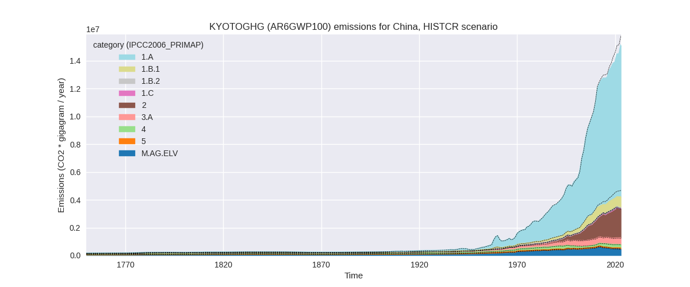
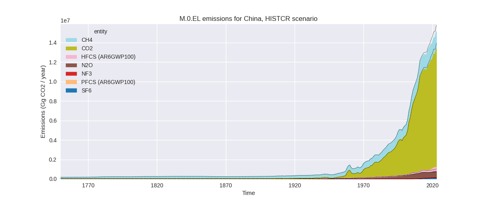
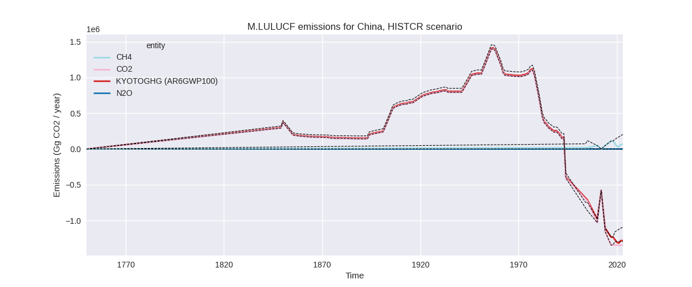
The following figures show the aggregate national total emissions
excluding LULUCF AR6GWP100 for the third party priority scenario. The
dotted linesshow the v2.6_final data.
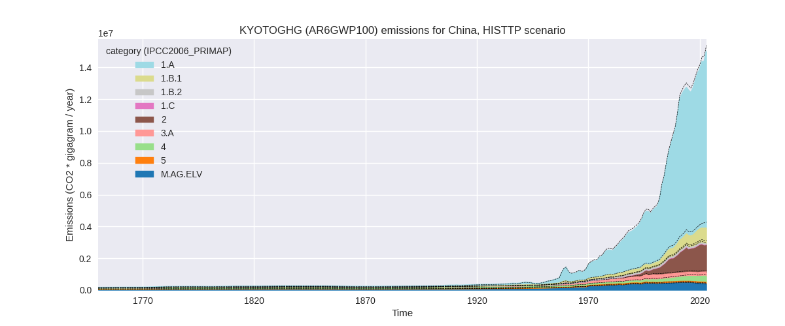
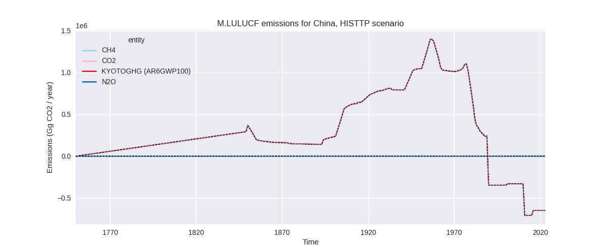
Overview over changes
In the country reported priority scenario we have the following
changes for aggregate Kyoto GHG and national total emissions excluding
LULUCF (M.0.EL):
- Emissions in 2023 have changed by -4.4%% (-692005.00 Gg CO2 / year)
- Emissions in 1990-2023 have changed by -1.8%% (-164523.70 Gg CO2 / year)
In the third party priority scenario we have the following changes
for aggregate Kyoto GHG and national total emissions excluding LULUCF
(M.0.EL):
- Emissions in 2023 have changed by -2.4%% (-370605.00 Gg CO2 / year)
- Emissions in 1990-2023 have changed by -2.5%% (-229155.44 Gg CO2 / year)
Most
important changes per scenario and time frame
In the country reported priority scenario the
following sector-gas combinations have the highest absolute impact on
national total KyotoGHG (AR6GWP100) emissions in 2023
(top 5):
- 1: 1.B.1, CO2 with -410430.72 Gg CO2 / year (-100.0%)
- 2: 1.A, CO2 with -240792.00 Gg CO2 / year (-2.2%)
- 3: 2, CO2 with -121570.60 Gg CO2 / year (-8.1%)
- 4: 2, HFCS (AR6GWP100) with 118569.28 Gg CO2 / year (38.5%)
- 5: 1.B.1, CH4 with -77671.51 Gg CO2 / year (-9.1%)
In the country reported priority scenario the
following sector-gas combinations have the highest absolute impact on
national total KyotoGHG (AR6GWP100) emissions in
1990-2023 (top 5):
- 1: 1.B.1, CO2 with -134390.25 Gg CO2 / year (-100.0%)
- 2: 2, CO2 with -13898.88 Gg CO2 / year (-1.6%)
- 3: 1.A, CO2 with -13580.38 Gg CO2 / year (-0.2%)
- 4: 2, HFCS (AR6GWP100) with 9431.65 Gg CO2 / year (7.2%)
- 5: 1.B.1, CH4 with -7709.76 Gg CO2 / year (-1.6%)
In the third party priority scenario the following
sector-gas combinations have the highest absolute impact on national
total KyotoGHG (AR6GWP100) emissions in 2023 (top
5):
- 1: 4, CH4 with -118135.30 Gg CO2 / year (-25.0%)
- 2: 1.B.1, CH4 with -89510.54 Gg CO2 / year (-12.1%)
- 3: 1.B.2, CH4 with -87549.92 Gg CO2 / year (-75.3%)
- 4: 1.B.1, CO2 with -64879.68 Gg CO2 / year (-15.8%)
- 5: 2, CO2 with -44844.80 Gg CO2 / year (-3.7%)
In the third party priority scenario the following
sector-gas combinations have the highest absolute impact on national
total KyotoGHG (AR6GWP100) emissions in 1990-2023 (top
5):
- 1: 4, CH4 with -107171.89 Gg CO2 / year (-34.1%)
- 2: 1.B.1, CH4 with -41733.41 Gg CO2 / year (-9.4%)
- 3: 1.A, CH4 with -40757.60 Gg CO2 / year (-32.3%)
- 4: 1.B.2, CH4 with -38330.93 Gg CO2 / year (-64.7%)
- 5: 2, CO2 with -10756.98 Gg CO2 / year (-1.4%)
Notes on data changes
Here we list notes explaining important emissions changes for the
country.
- CRT data covering 2005, 2020 and 2021 has been added. It replaces
BUR3 data for 2005 and extends BUR3 for 2020-2021. Other sources used
are: BUR3: 2018; NC4: 2017; DI: 1994, 2010, 2012, 2014
- The highest change in the CR time-series is that fugitive CO2 from
solid fuels (1.B.1) is now zero, because it is reported as NE,NO which
is mapped to 0. All subsectors are reported as NE (Not estimated) which
we map to nan. We will reconsider our prioritization of flag mapping for
the next PRIMAP-hist release.
- Changes in the TP time-series come from updated EDGAR and Andrew
cement data. Andrew cement has adjusted data for the latest years while
EDGAR has updated full time-series with the main change coming from the
waste sector.
Changes by sector and gas
For each scenario and time frame the changes are displayed for all
individual sectors and all individual gases. In the sector plot we use
aggregate Kyoto GHGs in AR6GWP100. In the gas plot we usenational total
emissions without LULUCF.
country reported scenario
2023
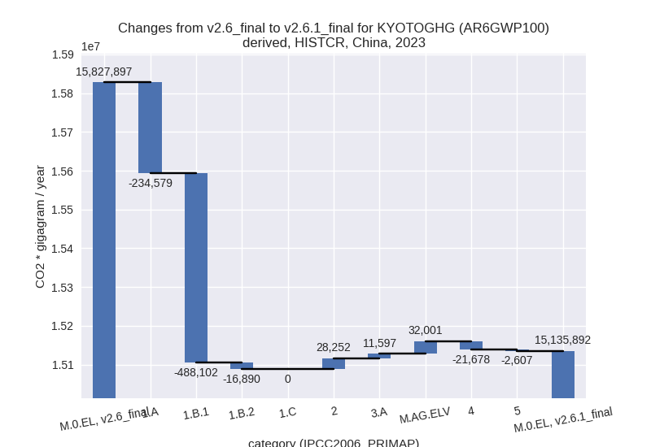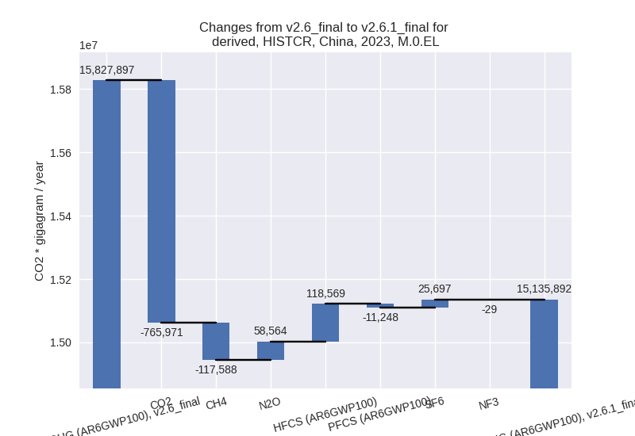
1990-2023
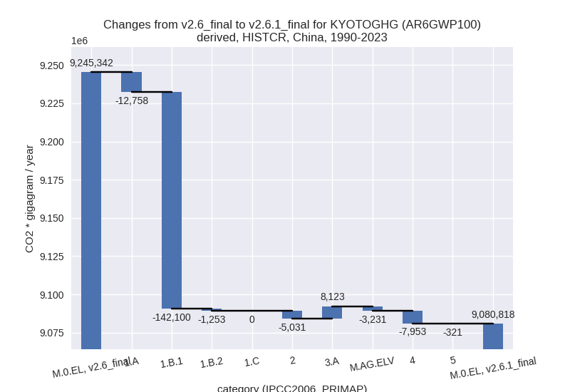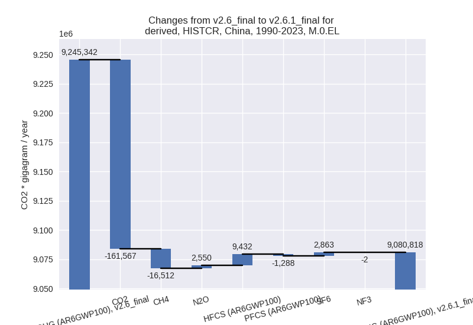
third party scenario
2023
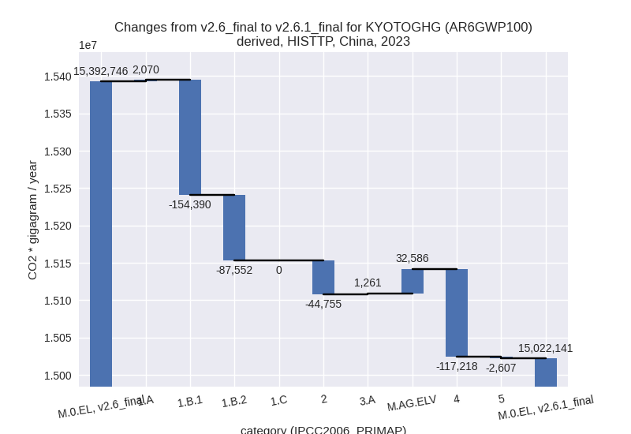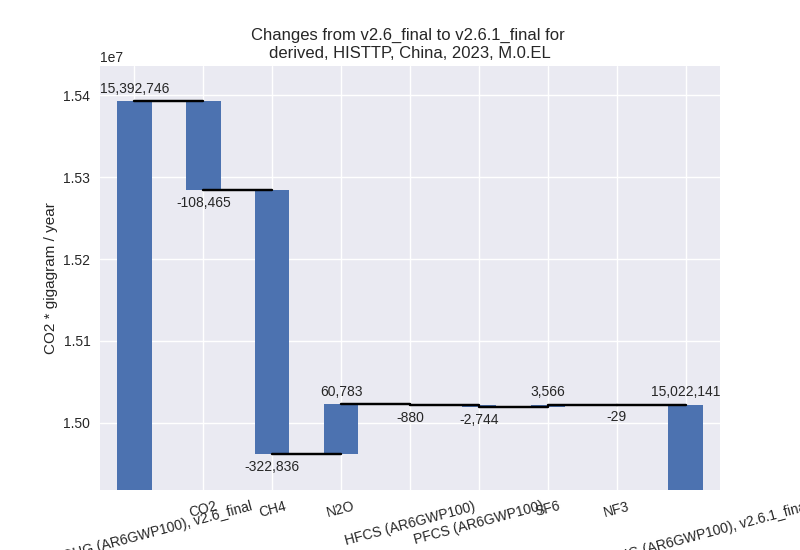
1990-2023
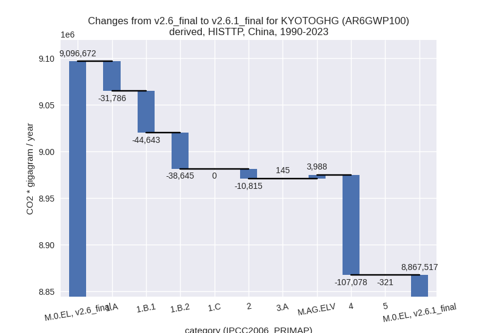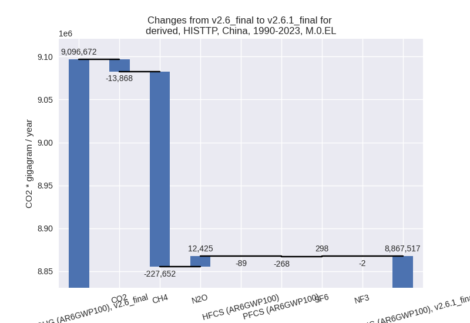
Detailed changes for the
scenarios:
country reported scenario
(HISTCR):
Most important changes
per time frame
For 2023 the following sector-gas combinations have
the highest absolute impact on national total KyotoGHG (AR6GWP100)
emissions in 2023 (top 5):
- 1: 1.B.1, CO2 with -410430.72 Gg CO2 / year (-100.0%)
- 2: 1.A, CO2 with -240792.00 Gg CO2 / year (-2.2%)
- 3: 2, CO2 with -121570.60 Gg CO2 / year (-8.1%)
- 4: 2, HFCS (AR6GWP100) with 118569.28 Gg CO2 / year (38.5%)
- 5: 1.B.1, CH4 with -77671.51 Gg CO2 / year (-9.1%)
For 1990-2023 the following sector-gas combinations
have the highest absolute impact on national total KyotoGHG (AR6GWP100)
emissions in 1990-2023 (top 5):
- 1: 1.B.1, CO2 with -134390.25 Gg CO2 / year (-100.0%)
- 2: 2, CO2 with -13898.88 Gg CO2 / year (-1.6%)
- 3: 1.A, CO2 with -13580.38 Gg CO2 / year (-0.2%)
- 4: 2, HFCS (AR6GWP100) with 9431.65 Gg CO2 / year (7.2%)
- 5: 1.B.1, CH4 with -7709.76 Gg CO2 / year (-1.6%)
Changes in the main sectors for aggregate KyotoGHG (AR6GWP100)
are
- 1: Total sectoral emissions in 2022 are 11107675.00
Gg CO2 / year which is 76.7% of M.0.EL emissions. 2023 Emissions have
changed by -5.9% (-739571.00 Gg CO2
/ year). 1990-2023 Emissions have changed by -2.2% (-156111.09 Gg CO2 / year). For 2023
the changes per gas
are:
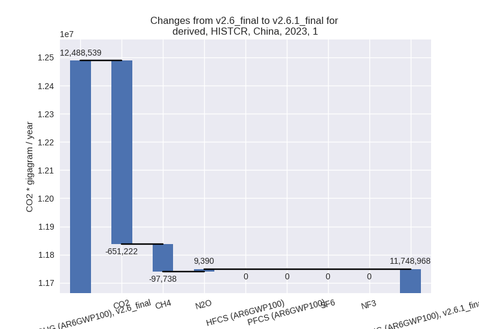
For 1990-2023 the changes per gas
are:
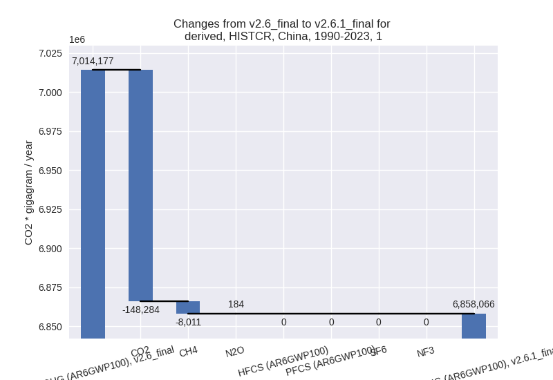
The changes come from the following subsectors:
- 1.A: Total sectoral emissions in 2022 are
10292716.00 Gg CO2 / year which is 92.7% of category 1 emissions. 2023
Emissions have changed by -2.1%
(-234579.00 Gg CO2 / year). 1990-2023 Emissions have changed by -0.2% (-12758.29 Gg CO2 / year). For 2023
the changes per gas
are:
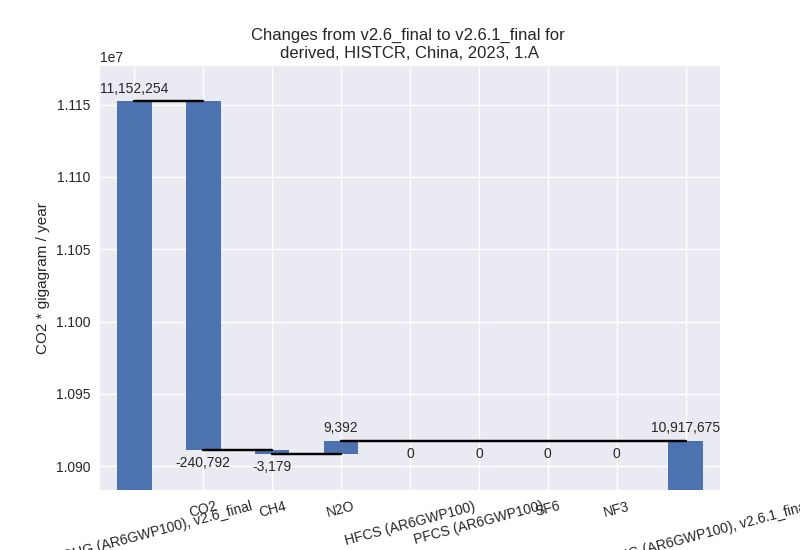
There is no subsector information available in PRIMAP-hist.
- 1.B.1: Total sectoral emissions in 2022 are
759752.78 Gg CO2 / year which is 6.8% of category 1 emissions. 2023
Emissions have changed by -38.7%
(-488102.23 Gg CO2 / year). 1990-2023 Emissions have changed by -22.9% (-142100.01 Gg CO2 / year). For
2023 the changes per gas
are:
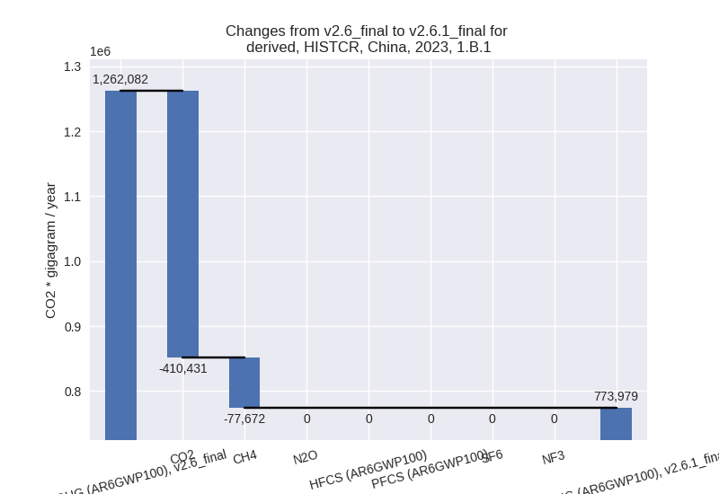
For 1990-2023 the changes per gas
are:
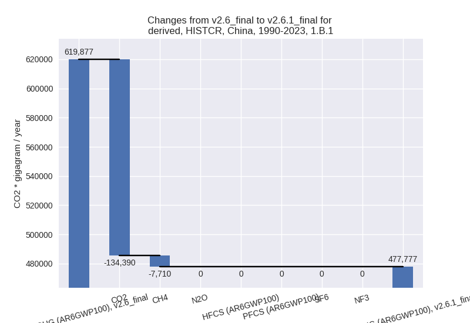
There is no subsector information available in PRIMAP-hist.
- 1.B.2: Total sectoral emissions in 2022 are
55206.04 Gg CO2 / year which is 0.5% of category 1 emissions. 2023
Emissions have changed by -22.8%
(-16890.26 Gg CO2 / year). 1990-2023 Emissions have changed by -4.2% (-1252.77 Gg CO2 / year). For 2023
the changes per gas
are:
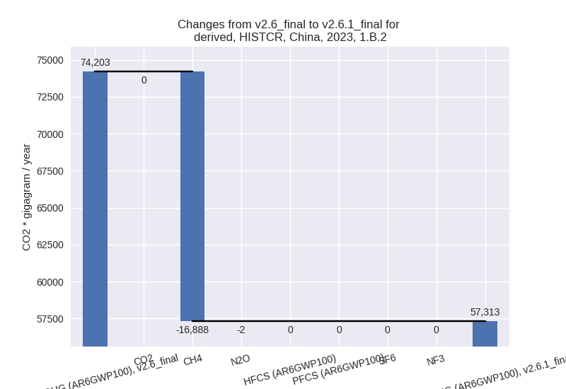
For 1990-2023 the changes per gas
are:
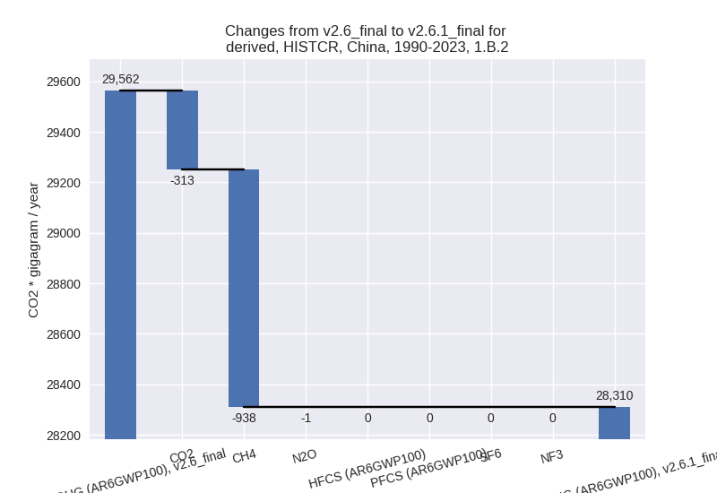
There is no subsector information available in PRIMAP-hist.
- 2: Total sectoral emissions in 2022 are 2127282.30
Gg CO2 / year which is 14.7% of M.0.EL emissions. 2023 Emissions have
changed by 1.3% (28251.70 Gg CO2 /
year). 1990-2023 Emissions have changed by -0.5% (-5030.71 Gg CO2 / year).
- M.AG: Total sectoral emissions in 2022 are
946844.38 Gg CO2 / year which is 6.5% of M.0.EL emissions. 2023
Emissions have changed by 4.9%
(43598.81 Gg CO2 / year). 1990-2023 Emissions have changed by 0.6% (4891.64 Gg CO2 / year). For 2023 the
changes per gas
are:
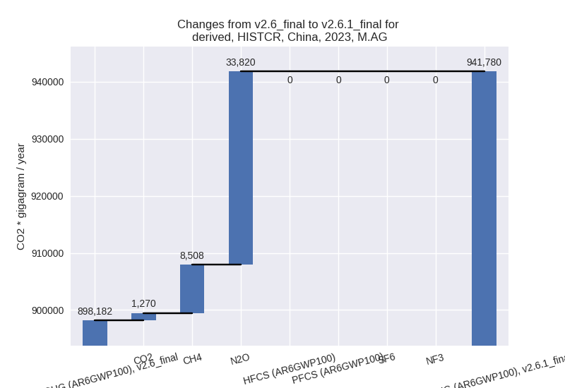
The changes come from the following subsectors:
- 3.A: Total sectoral emissions in 2022 are 473965.61
Gg CO2 / year which is 50.1% of category M.AG emissions. 2023 Emissions
have changed by 2.5% (11597.32 Gg
CO2 / year). 1990-2023 Emissions have changed by 2.0% (8122.94 Gg CO2 / year). For 2023 the
changes per gas
are:
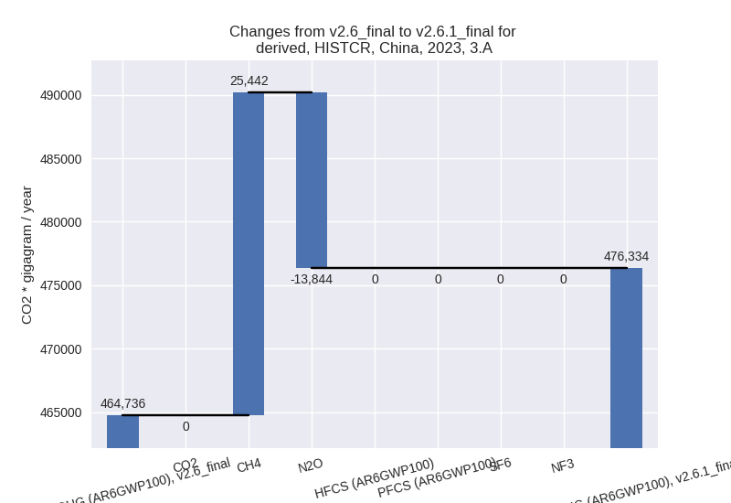
For 1990-2023 the changes per gas
are:
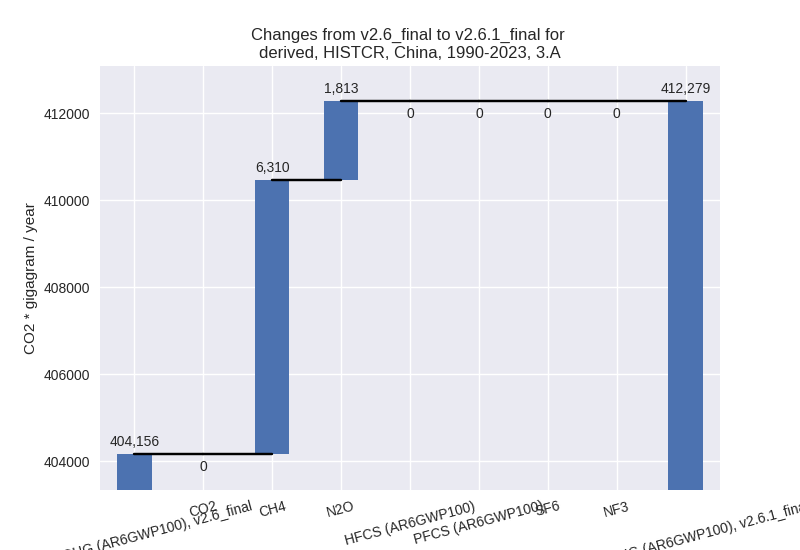
There is no subsector information available in PRIMAP-hist.
- M.AG.ELV: Total sectoral emissions in 2022 are
472878.78 Gg CO2 / year which is 49.9% of category M.AG emissions. 2023
Emissions have changed by 7.4%
(32001.49 Gg CO2 / year). 1990-2023 Emissions have changed by -0.7% (-3231.31 Gg CO2 / year). For 2023
the changes per gas
are:
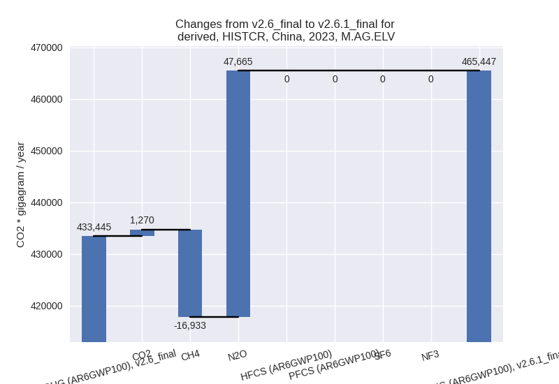
There is no subsector information available in PRIMAP-hist.
- 4: Total sectoral emissions in 2022 are 242979.02
Gg CO2 / year which is 1.7% of M.0.EL emissions. 2023 Emissions have
changed by -8.0% (-21677.88 Gg CO2 /
year). 1990-2023 Emissions have changed by -3.9% (-7952.68 Gg CO2 / year). For 2023
the changes per gas
are:
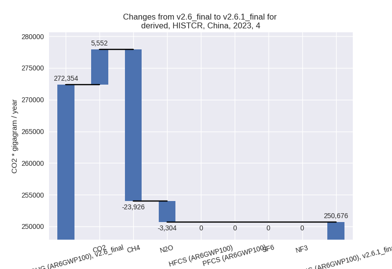
For 1990-2023 the changes per gas
are:
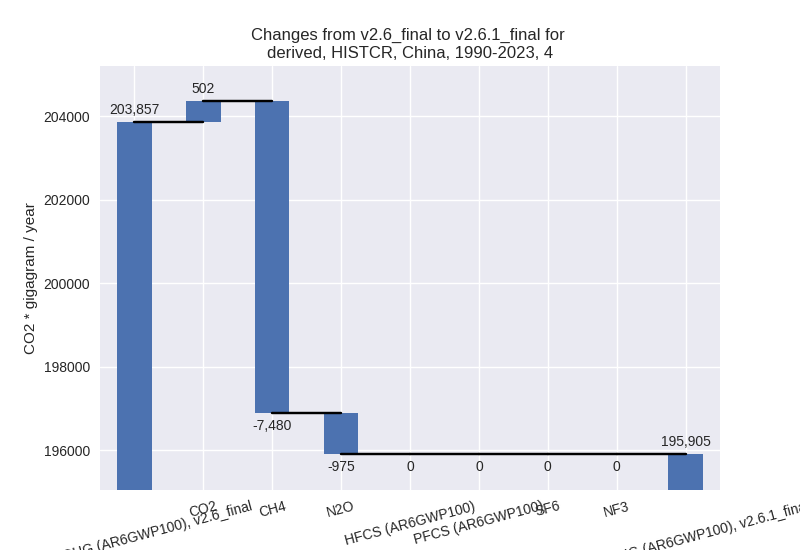
- 5: Total sectoral emissions in 2022 are 58254.02 Gg
CO2 / year which is 0.4% of M.0.EL emissions. 2023 Emissions have
changed by -4.1% (-2607.15 Gg CO2 /
year). 1990-2023 Emissions have changed by -0.6% (-320.90 Gg CO2 / year). For 2023
the changes per gas
are:
third party scenario (HISTTP):
Most important changes
per time frame
For 2023 the following sector-gas combinations have
the highest absolute impact on national total KyotoGHG (AR6GWP100)
emissions in 2023 (top 5):
- 1: 4, CH4 with -118135.30 Gg CO2 / year (-25.0%)
- 2: 1.B.1, CH4 with -89510.54 Gg CO2 / year (-12.1%)
- 3: 1.B.2, CH4 with -87549.92 Gg CO2 / year (-75.3%)
- 4: 1.B.1, CO2 with -64879.68 Gg CO2 / year (-15.8%)
- 5: 2, CO2 with -44844.80 Gg CO2 / year (-3.7%)
For 1990-2023 the following sector-gas combinations
have the highest absolute impact on national total KyotoGHG (AR6GWP100)
emissions in 1990-2023 (top 5):
- 1: 4, CH4 with -107171.89 Gg CO2 / year (-34.1%)
- 2: 1.B.1, CH4 with -41733.41 Gg CO2 / year (-9.4%)
- 3: 1.A, CH4 with -40757.60 Gg CO2 / year (-32.3%)
- 4: 1.B.2, CH4 with -38330.93 Gg CO2 / year (-64.7%)
- 5: 2, CO2 with -10756.98 Gg CO2 / year (-1.4%)
Changes in the main sectors for aggregate KyotoGHG (AR6GWP100)
are
- 1: Total sectoral emissions in 2022 are 11493762.00
Gg CO2 / year which is 80.1% of M.0.EL emissions. 2023 Emissions have
changed by -1.9% (-239872.00 Gg CO2
/ year). 1990-2023 Emissions have changed by -1.6% (-115074.54 Gg CO2 / year).
- 2: Total sectoral emissions in 2022 are 1743144.10
Gg CO2 / year which is 12.1% of M.0.EL emissions. 2023 Emissions have
changed by -2.5% (-44754.90 Gg CO2 /
year). 1990-2023 Emissions have changed by -1.1% (-10814.57 Gg CO2 / year). For 2023
the changes per gas
are:
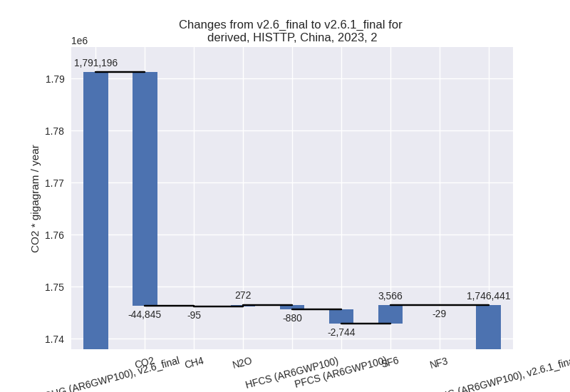
- M.AG: Total sectoral emissions in 2022 are
682548.16 Gg CO2 / year which is 4.8% of M.0.EL emissions. 2023
Emissions have changed by 5.3%
(33847.49 Gg CO2 / year). 1990-2023 Emissions have changed by 0.6% (4132.89 Gg CO2 / year). For 2023 the
changes per gas
are:
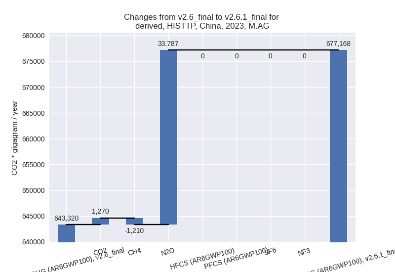
The changes come from the following subsectors:
- 3.A: Total sectoral emissions in 2022 are 254156.59
Gg CO2 / year which is 37.2% of category M.AG emissions. 2023 Emissions
have changed by 0.5% (1261.20 Gg CO2
/ year). 1990-2023 Emissions have changed by 0.1% (145.33 Gg CO2 / year).
- M.AG.ELV: Total sectoral emissions in 2022 are
428391.57 Gg CO2 / year which is 62.8% of category M.AG emissions. 2023
Emissions have changed by 8.4%
(32586.29 Gg CO2 / year). 1990-2023 Emissions have changed by 0.9% (3987.56 Gg CO2 / year). For 2023 the
changes per gas
are:
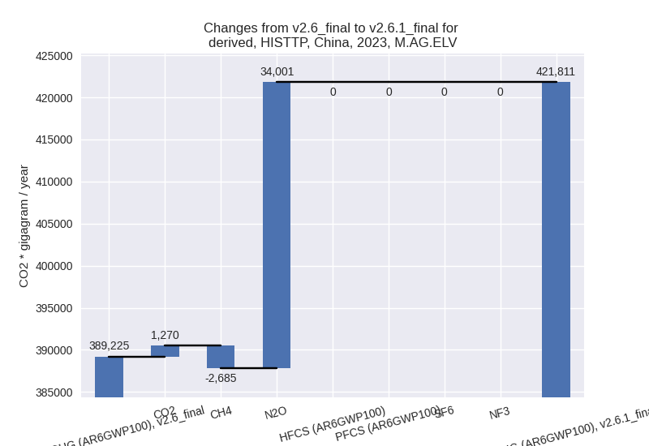
There is no subsector information available in PRIMAP-hist.
- 4: Total sectoral emissions in 2022 are 374531.64
Gg CO2 / year which is 2.6% of M.0.EL emissions. 2023 Emissions have
changed by -23.3% (-117217.79 Gg CO2
/ year). 1990-2023 Emissions have changed by -31.7% (-107078.32 Gg CO2 / year). For
2023 the changes per gas
are:
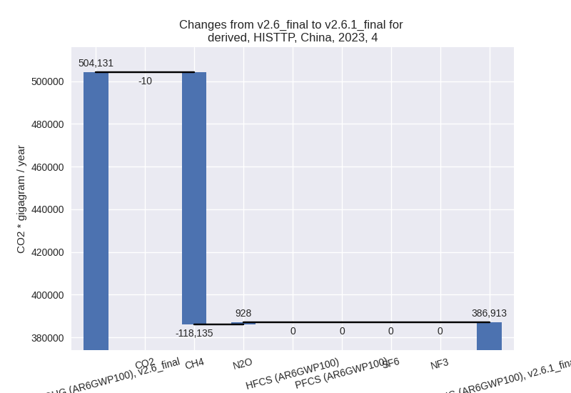
For 1990-2023 the changes per gas
are:
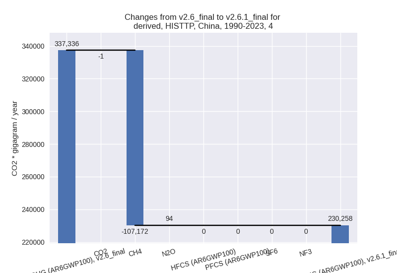
- 5: Total sectoral emissions in 2022 are 58254.02 Gg
CO2 / year which is 0.4% of M.0.EL emissions. 2023 Emissions have
changed by -4.1% (-2607.15 Gg CO2 /
year). 1990-2023 Emissions have changed by -0.6% (-320.90 Gg CO2 / year). For 2023
the changes per gas
are:
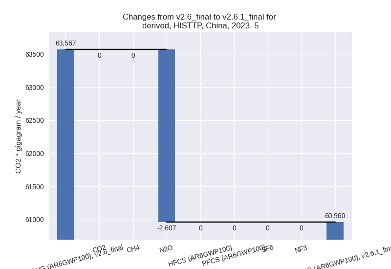